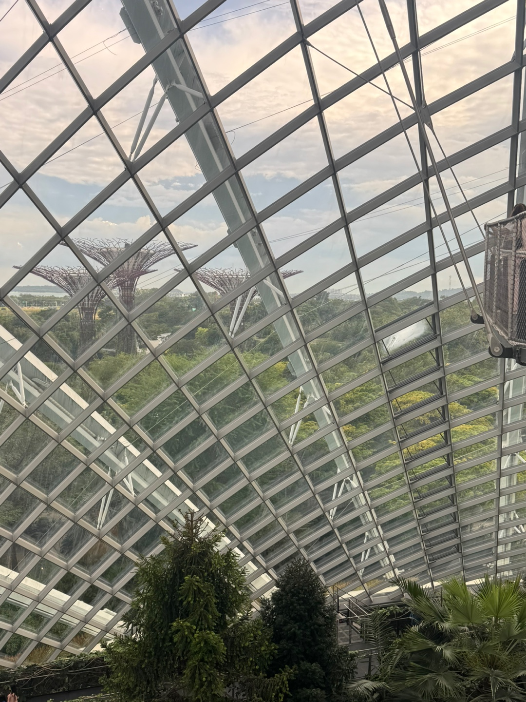
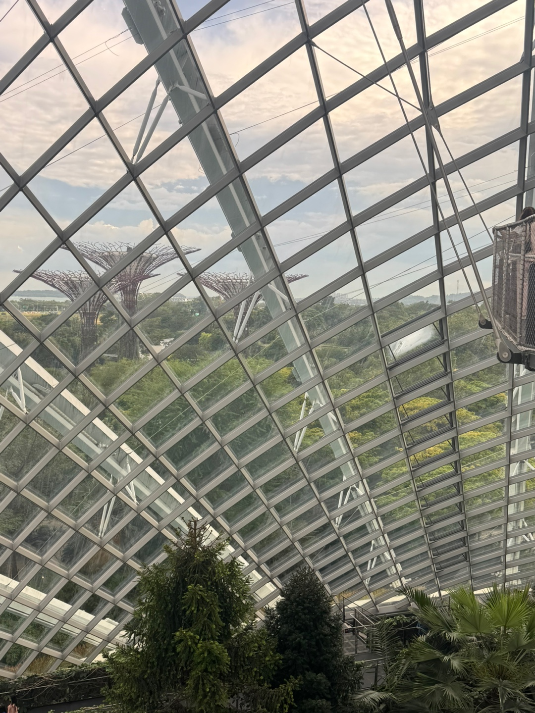

- 요즘 내 이야기
- 식단
- 공부
요즘 내 이야기
Hello world.
how to use HTML
저는 오늘(2025.03.04)처음으로 코딩을 배우게되었습니다.
코딩을 배우겠다는 다짐을 한지 약 한달이 된 것 같은데 그간 싱가포르 여행을 준비하느라
꽤나 오랜만에 다시 동영상을 틀고 자리에 앉았네요.
사실은 핑계죠? 하하. 그래도 입사하기 전 남은 기간동안에 열심히 해보려고 해요..
지금은 2025-03-21 오후 11:21분이고, 바로 내일! 오전에 기상하여 도서관에 가서 진득히 공부할 생각입니다.
아참 싱가포르 여행하는 동안 스탑되었던 운동도 오늘 다시 시작했어요.
 
오늘은 다시 제 다짐대로 정돈된 일상을 보내기 시작하는 날인듯 해요
정말 오랜만에 도서관에 공부하러 가는데..졸지 않고 잘 공부할 수 있을까요?
사실 저는 고딩때 공부를 그렇~게 열심히 하는 학생은 아니었기에 집중을 잘 하지는 못해요
그래서 내일도 오전부터 의자에 앉아 무언가를 한다는 것이 꽤나 부담으로 느껴지기는 합니다.
그래도 다행인 점은 약간의 설렘이 있다는 것!
오늘 일찍 자야할텐데 말이죠, 내일 오전에 기상하려면.